Fundamentos de Verificação e Validação (V&V) e Inspeção de Fagan
Tabela de Contribuição e Transparência de IA Generativa
A Tabela 1 apresenta a distribuição de responsabilidades na elaboração, curadoria e revisão de Fundamentos de Verificação e Validação (V&V) e Inspeção de Fagan.
Tabela 1 — Matriz de Contribuição e Transparência de IA Generativa — V&V e Inspeção de Fagan
| Integrante | Atribuição no Artefato | Data | Horário | Ferramenta de IA | Propósito do Uso de IA | Hiperligação / Gravação |
|---|---|---|---|---|---|---|
| Edvaldo Soares Brasileiro Filho | Concepção, estruturação dos 13 itens normativos (VVR-01 a VVR-13) em 3 blocos temáticos, fundamentação bibliográfica e mapeamento de evidências |
22/11/2026 | 10:30 - 12:30 | Google Gemini | Suporte na organização de tabelas Markdown e checagem de normas ABNT; conteúdo técnico concebido e auditado pelo discente | — |
| Gustavo Antonio Rodrigues e Silva | Revisão de conformidade estrutural, checagem bibliográfica e validação editorial | 22/11/2026 | — | — | Aguardando revisão por pares pós-integração | — |
Fonte: Elaborada por Edvaldo Soares Brasileiro Filho e Gustavo Antonio Rodrigues e Silva, 2026.
1. Introdução e Contextualização Metodológica
A qualidade de um sistema computacional depende intrinsecamente do rigor aplicado às suas etapas de avaliação analítica e empírica. No contexto da Engenharia de Software e da Interação Humano-Computador, a Verificação e Validação (V&V) constitui a espinha dorsal da garantia de qualidade de artefatos de processo e de produto (Sommerville, 2019; Sales, 2026).
Enquanto a Verificação analisa se o software e seus modelos intermediários atendem aos requisitos especificados de forma correta ("estamos construindo o produto da forma correta?"), a Validação avalia se o produto atende às reais necessidades e expectativas dos usuários e clientes no seu contexto de uso ("estamos construindo o produto certo?") (UNIVESP, Aula 05).
Entre as técnicas de revisão estática mais eficazes da engenharia de software destaca-se a Inspeção de Software de Michael Fagan (1976), caracterizada pelo rigor formal, definição estrita de papéis na equipe, existência de fases estruturadas (Planejamento, Visão Geral, Preparação Individual, Reunião de Inspeção, Retrabalho e Acompanhamento) e orientação sistemática através de Listas de Verificação (checklists).
Esta página formaliza os 13 itens normativos concebidos para avaliar a solidez dos fundamentos de V&V, as técnicas de revisão estática/dinâmica e a aderência ao método clássico de inspeção formal no âmbito do projeto do Fórum Diolinux Plus.
2. Critérios Normativos de Verificação e Validação (VVR-01 a VVR-13)
2.1 Bloco 1 — Conceitos Canônicos de Verificação e Validação (UNIVESP, Aula 05)
A Tabela 2 apresenta os critérios VVR-01 a VVR-06 referentes à delimitação de escopo, distinção estática/dinâmica e propósitos de V&V.
Tabela 2 — Critérios de Conceitos Canônicos de Verificação e Validação
| ID | Critério / Pergunta de Verificação | Autor do Item | Fundamentação Canônica (Fonte, Minutagem e Citação Literal) | Evidência Visual (Recorte) | Resposta | Versão, Data e Hora da Avaliação |
|---|---|---|---|---|---|---|
| VVR-01 | O planejamento de V&V do projeto delimita explicitamente os produtos de trabalho sujeitos à verificação e validação, contemplando código-fonte, diagramas do modelo de análise e modelos de arquitetura? | Edvaldo Soares Brasileiro Filho | "Os produtos que podem ser analisados pela Verificação e Validação: código fonte, diagramas do modelo de análise e de arquitetura do projeto." UNIVESP. Gerência e Qualidade de Software — Aula 05 — Verificação e Validação (minuto 1:12). |
Ver Figura 1 | [ ] Sim (Conforme)[ ] Não (Não Conforme)[ ] Incompleto[ ] N/A |
(Preencher na inspeção) |
| VVR-02 | O projeto estabelece e aplica a distinção formal entre análise estática (artefatos que não estão sendo executados, como documentação e código-fonte) e análise dinâmica (software executável sob carga e estímulos)? | Edvaldo Soares Brasileiro Filho | "Análise estática se aplica para artefatos que não estão sendo executados, o código-fonte por exemplo. Análise dinâmica é feita quando o software está em execução." UNIVESP. Gerência e Qualidade de Software — Aula 05 — Verificação e Validação (minuto 1:21). |
Ver Figura 2 | [ ] Sim (Conforme)[ ] Não (Não Conforme)[ ] Incompleto[ ] N/A |
(Preencher na inspeção) |
| VVR-03 | A atividade de verificação é conceitualmente orientada a averiguar se o sistema e seus artefatos atendem com rigor às especificações prévias estabelecidas ("estamos construindo o produto da forma correta?")? | Edvaldo Soares Brasileiro Filho | "Verificação é a análise dos requerimentos e especificações do software para analisar se estamos montando o produto da forma correta." UNIVESP. Gerência e Qualidade de Software — Aula 05 — Verificação e Validação (minuto 5:15). |
Ver Figura 3 | [ ] Sim (Conforme)[ ] Não (Não Conforme)[ ] Incompleto[ ] N/A |
(Preencher na inspeção) |
| VVR-04 | O projeto seleciona e emprega métodos formais de verificação técnica, abrangendo inspeção de artefatos, code review e revisão técnica de documentação? | Edvaldo Soares Brasileiro Filho | "Exemplos de verificação: inspeção, code review do código-fonte, revisão da documentação." UNIVESP. Gerência e Qualidade de Software — Aula 05 — Verificação e Validação (minuto 2:32). |
Ver Figura 4 | [ ] Sim (Conforme)[ ] Não (Não Conforme)[ ] Incompleto[ ] N/A |
(Preencher na inspeção) |
| VVR-05 | O escopo dos itens verificáveis estende-se sistematicamente a todos os artefatos de engenharia produzidos (requisitos, planos de teste, código, esquemas de bancos de dados)? | Edvaldo Soares Brasileiro Filho | "O que pode ser verificado: artefatos de requisitos, testes, o código-fonte, tabelas de bancos de dados, etc." UNIVESP. Gerência e Qualidade de Software — Aula 05 — Verificação e Validação (minuto 2:14). |
Ver Figura 5 | [ ] Sim (Conforme)[ ] Não (Não Conforme)[ ] Incompleto[ ] N/A |
(Preencher na inspeção) |
| VVR-06 | A atividade de validação é explicitamente definida e executada para conferir se o software atende às necessidades, expectativas e regras de negócio reais dos usuários no mundo real ("estamos construindo o produto certo?")? | Edvaldo Soares Brasileiro Filho | "Validação seria uma avaliação do software para conferir se o produto atende as necessidades impostas." UNIVESP. Gerência e Qualidade de Software — Aula 05 — Verificação e Validação (minuto 3:50). |
Ver Figura 6 | [ ] Sim (Conforme)[ ] Não (Não Conforme)[ ] Incompleto[ ] N/A |
(Preencher na inspeção) |
Fonte: Elaborada por Edvaldo Soares Brasileiro Filho, 2026.
2.2 Bloco 2 — Técnicas de Revisão Estática e Dinâmica (UNIVESP, Aula 06)
A Tabela 3 apresenta os critérios VVR-07 a VVR-11 relativos aos tipos formais de revisão e às características da inspeção.
Tabela 3 — Critérios de Técnicas de Revisão Estática e Dinâmica
| ID | Critério / Pergunta de Verificação | Autor do Item | Fundamentação Canônica (Fonte, Minutagem e Citação Literal) | Evidência Visual (Recorte) | Resposta | Versão, Data e Hora da Avaliação |
|---|---|---|---|---|---|---|
| VVR-07 | O projeto define a atividade de revisão como um processo colaborativo estruturado, conduzido por uma ou mais pessoas sobre um artefato para detectar precocemente erros, defeitos e omissões? | Edvaldo Soares Brasileiro Filho | "Revisão é um processo realizado por uma ou várias pessoas em um artefato de software que tem o objetivo de achar erros e falhas." UNIVESP. Gerência e Qualidade de Software — Aula 06 — Técnica de Revisão (minuto 0:58). |
Ver Figura 7 | [ ] Sim (Conforme)[ ] Não (Não Conforme)[ ] Incompleto[ ] N/A |
(Preencher na inspeção) |
| VVR-08 | O projeto aplica de forma equilibrada modalidades estáticas (revisão por pares, checagem de conformidade de modelos) e dinâmicas (baterias de testes de unidade, integração, segurança e carga)? | Edvaldo Soares Brasileiro Filho | "Revisão estática: revisão de documentação e code review. Revisão dinâmica: testes no geral, sejam unitários, de segurança ou de carga." UNIVESP. Gerência e Qualidade de Software — Aula 06 — Técnica de Revisão (minuto 1:16). |
Ver Figura 8 | [ ] Sim (Conforme)[ ] Não (Não Conforme)[ ] Incompleto[ ] N/A |
(Preencher na inspeção) |
| VVR-09 | As revisões do projeto são formalmente classificadas em suas categorias metodológicas canônicas: Revisão Formal, Inspeção e Walkthrough (percurso guiado)? | Edvaldo Soares Brasileiro Filho | "Tipos de revisão formais: revisão formal, inspeção e walkthrough." UNIVESP. Gerência e Qualidade de Software — Aula 06 — Técnica de Revisão (minuto 13:56). |
Ver Figura 9 | [ ] Sim (Conforme)[ ] Não (Não Conforme)[ ] Incompleto[ ] N/A |
(Preencher na inspeção) |
| VVR-10 | A técnica de inspeção empregada segue procedimento estruturado com papéis bem delineados, separando formalmente a identificação e o catálogo das falhas antes de homologar a versão seguinte do artefato? | Edvaldo Soares Brasileiro Filho | "Inspeção é uma técnica de revisão estruturada que segue papéis definidos e separa cada falha sistematicamente antes que o artefato possa seguir para sua próxima versão." UNIVESP. Gerência e Qualidade de Software — Aula 06 — Técnica de Revisão (minuto 14:32). |
Ver Figura 10 | [ ] Sim (Conforme)[ ] Não (Não Conforme)[ ] Incompleto[ ] N/A |
(Preencher na inspeção) |
| VVR-11 | O processo de inspeção evidencia as 5 características fundamentais preconizadas por Michael Fagan: papéis definidos, fases estruturadas, uso de listas de verificação (checklists), foco na detecção de defeitos e coleta de métricas de qualidade? | Edvaldo Soares Brasileiro Filho | "Características principais da inspeção: uso de papéis bem definidos; existência de fases estruturadas; uso de listas de verificação para orientar o processo; foco estrito na detecção de defeitos; coleta de métricas do processo de inspeção." Fagan (1976, pp. 182–211); UNIVESP. Aula 06 (minuto 14:32). |
Ver Figura 11 | [ ] Sim (Conforme)[ ] Não (Não Conforme)[ ] Incompleto[ ] N/A |
(Preencher na inspeção) |
Fonte: Elaborada por Edvaldo Soares Brasileiro Filho, 2026.
2.3 Bloco 3 — Método de Fagan e Validação Complementar (Slides Aula 23 — Sales, 2026)
A Tabela 4 apresenta os critérios VVR-12 e VVR-13 referentes aos 6 passos do método de Fagan e às estratégias de validação.
Tabela 4 — Critérios do Método de Fagan e Estratégias de Validação
| ID | Critério / Pergunta de Verificação | Autor do Item | Fundamentação Canônica (Fonte e Citação Literal) | Evidência Visual (Recorte) | Resposta | Versão, Data e Hora da Avaliação |
|---|---|---|---|---|---|---|
| VVR-12 | O processo de inspeção executa sistematicamente os 6 passos canônicos estabelecidos por Fagan: (1) Planejamento, (2) Visão Geral / Apresentação, (3) Preparação Individual, (4) Reunião de Inspeção, (5) Retrabalho / Correção e (6) Acompanhamento / Seguimento? | Edvaldo Soares Brasileiro Filho | "Os seis passos do método de inspeção proposto por Fagan: 1. Planejamento; 2. Visão Geral / Apresentação; 3. Preparação Individual; 4. Reunião de Inspeção; 5. Retrabalho / Correção; 6. Acompanhamento / Seguimento." Sales, André Barros de. Requisitos — Aula 23. Brasília: UnB/FGA, 2026. |
Ver Figura 12 | [ ] Sim (Conforme)[ ] Não (Não Conforme)[ ] Incompleto[ ] N/A |
(Preencher na inspeção) |
| VVR-13 | O projeto adota estratégias complementares de validação do software com stakeholders, incluindo comprovação informal, prototipação em diferentes níveis e análise formal de pontos de vista? | Edvaldo Soares Brasileiro Filho | "Estratégias de validação de software: Comprovação Informal, Prototipação e Análise de Pontos de Vista." Sales, André Barros de. Requisitos — Aula 23. Brasília: UnB/FGA, 2026. |
Ver Figura 13 | [ ] Sim (Conforme)[ ] Não (Não Conforme)[ ] Incompleto[ ] N/A |
(Preencher na inspeção) |
Fonte: Elaborada por Edvaldo Soares Brasileiro Filho, 2026.
3. Recortes Visuais das Fontes Bibliográficas (Evidências Normativas)
Abaixo constam os 13 recortes das referências bibliográficas canônicas, destacando os trechos exatos de onde cada critério foi formulado:
Figura 1 — Recorte comprobatório do critério VVR-01
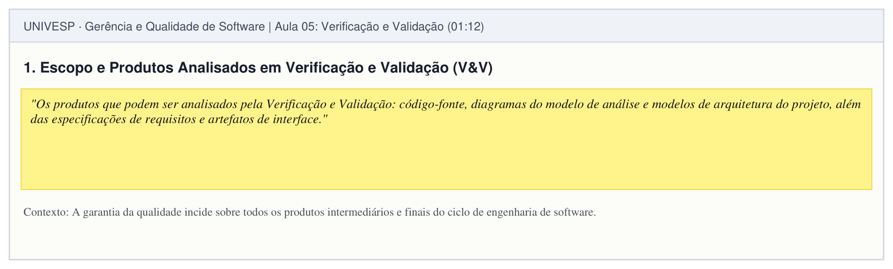
Figura 1 — Trecho comprobatório do critérioVVR-01 (Produtos analisados por V&V).Fonte: UNIVESP. Gerência e Qualidade de Software — Aula 05 (minuto 1:12), 2026.
Figura 2 — Recorte comprobatório do critério VVR-02
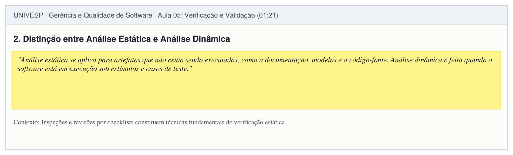
Figura 2 — Trecho comprobatório do critérioVVR-02 (Análise estática vs. dinâmica).Fonte: UNIVESP. Gerência e Qualidade de Software — Aula 05 (minuto 1:21), 2026.
Figura 3 — Recorte comprobatório do critério VVR-03
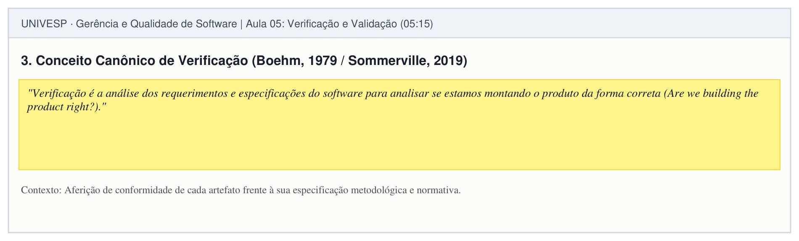
Figura 3 — Trecho comprobatório do critérioVVR-03 (Conceito de Verificação).Fonte: UNIVESP. Gerência e Qualidade de Software — Aula 05 (minuto 5:15), 2026.
Figura 4 — Recorte comprobatório do critério VVR-04
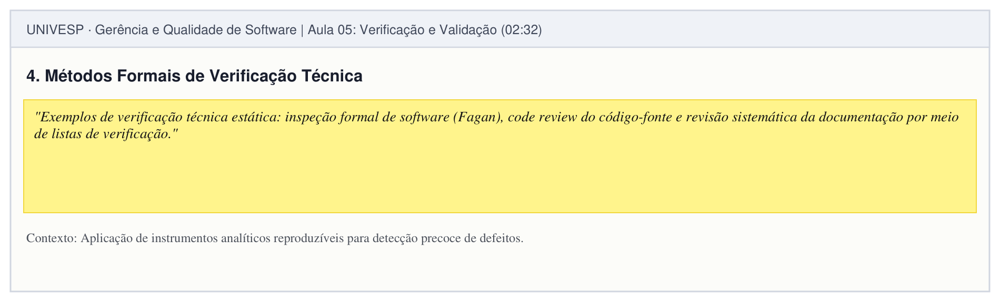
Figura 4 — Trecho comprobatório do critérioVVR-04 (Métodos de Verificação).Fonte: UNIVESP. Gerência e Qualidade de Software — Aula 05 (minuto 2:32), 2026.
Figura 5 — Recorte comprobatório do critério VVR-05
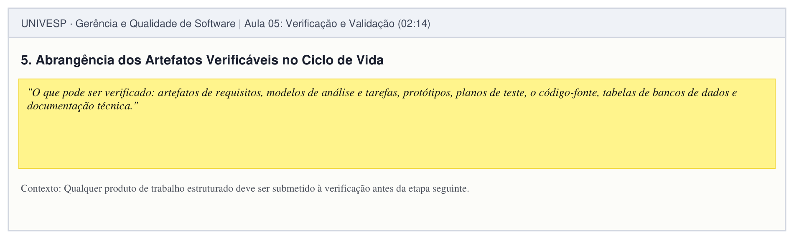
Figura 5 — Trecho comprobatório do critérioVVR-05 (Artefatos verificáveis).Fonte: UNIVESP. Gerência e Qualidade de Software — Aula 05 (minuto 2:14), 2026.
Figura 6 — Recorte comprobatório do critério VVR-06
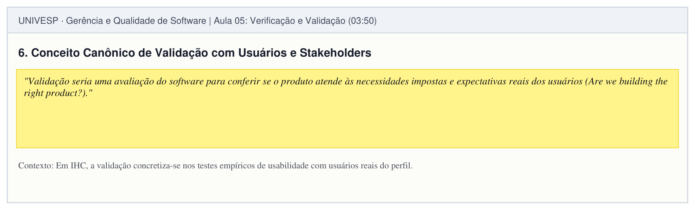
Figura 6 — Trecho comprobatório do critérioVVR-06 (Conceito de Validação).Fonte: UNIVESP. Gerência e Qualidade de Software — Aula 05 (minuto 3:50), 2026.
Figura 7 — Recorte comprobatório do critério VVR-07
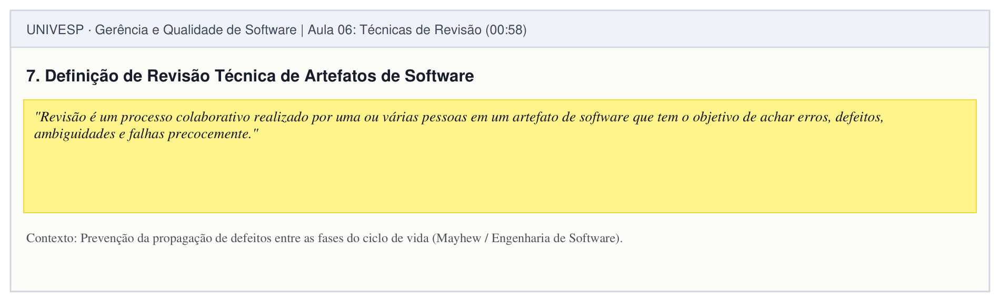
Figura 7 — Trecho comprobatório do critérioVVR-07 (Definição de Revisão).Fonte: UNIVESP. Gerência e Qualidade de Software — Aula 06 (minuto 0:58), 2026.
Figura 8 — Recorte comprobatório do critério VVR-08
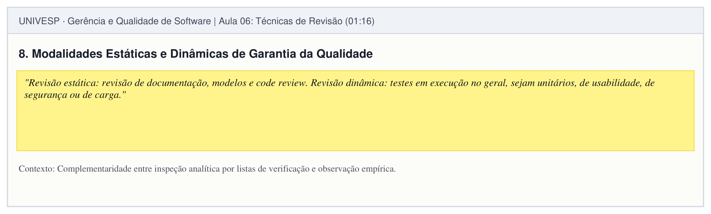
Figura 8 — Trecho comprobatório do critérioVVR-08 (Modalidades de revisão estática e dinâmica).Fonte: UNIVESP. Gerência e Qualidade de Software — Aula 06 (minuto 1:16), 2026.
Figura 9 — Recorte comprobatório do critério VVR-09
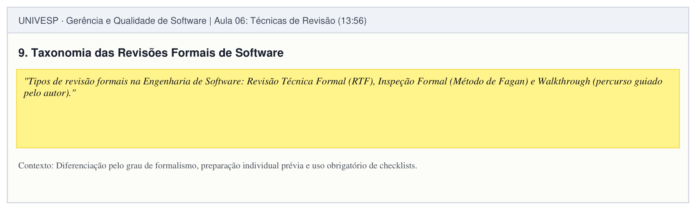
Figura 9 — Trecho comprobatório do critérioVVR-09 (Tipos de revisão formais).Fonte: UNIVESP. Gerência e Qualidade de Software — Aula 06 (minuto 13:56), 2026.
Figura 10 — Recorte comprobatório do critério VVR-10
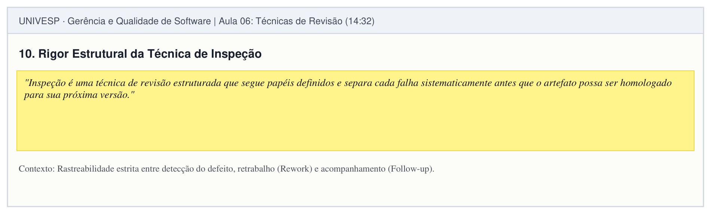
Figura 10 — Trecho comprobatório do critérioVVR-10 (Rigor metodológico da Inspeção).Fonte: UNIVESP. Gerência e Qualidade de Software — Aula 06 (minuto 14:32), 2026.
Figura 11 — Recorte comprobatório do critério VVR-11
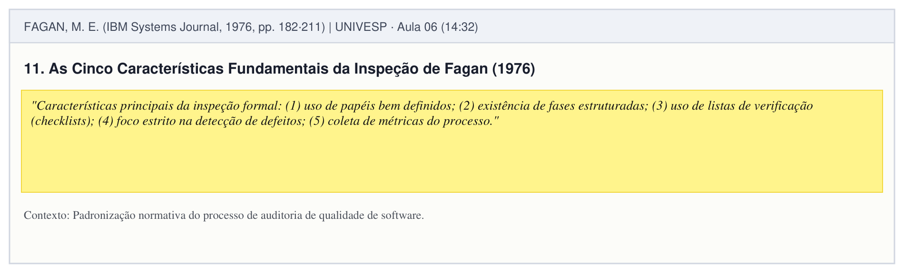
Figura 11 — Trecho comprobatório do critérioVVR-11 (Cinco elementos canônicos de Fagan).Fonte: FAGAN (1976, pp. 182–211) e UNIVESP. Aula 06 (minuto 14:32), 2026.
Figura 12 — Recorte comprobatório do critério VVR-12
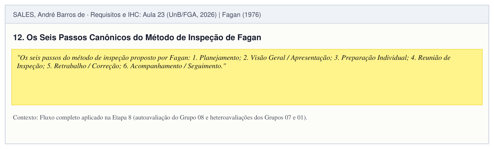
Figura 12 — Trecho comprobatório do critérioVVR-12 (Os seis passos do método de Fagan).Fonte: SALES, André Barros de. Requisitos — Aula 23 (Slides), 2026.
Figura 13 — Recorte comprobatório do critério VVR-13
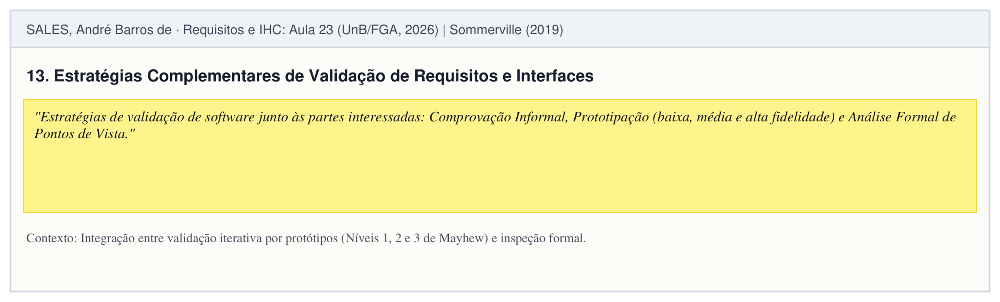
Figura 13 — Trecho comprobatório do critérioVVR-13 (Estratégias complementares de validação).Fonte: SALES, André Barros de. Requisitos — Aula 23 (Slides), 2026.
4. Validação desta Lista pela Lista de Governança do Prof. Dr. André Barros de Sales (DG-01 a DG-11)
Em estrito cumprimento às diretrizes de qualidade do Plano de Ensino (Sales, 2026, pp. 8–9), a Tabela 5 submete esta própria lista à rubrica oficial de governança.
Tabela 5 — Autoavaliação de conformidade com os critérios DG-01 a DG-11
| ID | Critério de Governança do Plano de Ensino | Autor do Item | Resposta | Versão, Data e Hora da Avaliação | Evidência de Conformidade nesta Lista |
|---|---|---|---|---|---|
| DG-01 | O histórico de versão padronizado? | Prof. Dr. André Barros de Sales (Plano de Ensino FGA0173, 2026) | ✅ Sim (Conforme) | v1.0 — 22/11/2026 |
Seção Histórico de Versão (Tabela 6) padronizada ao final de 15-fundamentos-vv-fagan.md. |
| DG-02 | O(s) autor(es) e o(s) revisor(es) para cada artefato? | Prof. Dr. André Barros de Sales (Plano de Ensino FGA0173, 2026) | ✅ Sim (Conforme) | v1.0 — 22/11/2026 |
Coluna Autor do Item preenchida em 100% dos critérios e Tabela 1 identificando autor e revisor. |
| DG-03 | Referências bibliográficas e/ou bibliografia em todos os artefatos? | Prof. Dr. André Barros de Sales (Plano de Ensino FGA0173, 2026) | ✅ Sim (Conforme) | v1.0 — 22/11/2026 |
Seção Referências Bibliográficas (ABNT NBR 6023) completa com citações exatas ao final. |
| DG-04 | As tabelas e imagens possuem legenda e fonte e são chamadas dentro do texto? | Prof. Dr. André Barros de Sales (Plano de Ensino FGA0173, 2026) | ✅ Sim (Conforme) | v1.0 — 22/11/2026 |
Tabelas 1 a 6 e Figuras 1 a 13 com legendas, fontes nominais e chamadas textuais prévias. |
| DG-05 | Um texto fazendo uma introdução dos artefatos? | Prof. Dr. André Barros de Sales (Plano de Ensino FGA0173, 2026) | ✅ Sim (Conforme) | v1.0 — 22/11/2026 |
Seção 1. Introdução situa V&V e os 6 passos de Fagan no Ciclo de Vida da Engenharia de Usabilidade. |
| DG-06 | O cronograma executado com quem realizou cada artefato/atividade e as datas de início e fim da construção/realização? | Prof. Dr. André Barros de Sales (Plano de Ensino FGA0173, 2026) | ✅ Sim (Conforme) | v1.0 — 22/11/2026 |
Registros vinculados ao cronograma executado e à matriz de contribuição. |
| DG-07 | Ata(s) da(s) reuniões (com data, horário de início e do final, participantes, objetivo, atividades definidas etc.)? | Prof. Dr. André Barros de Sales (Plano de Ensino FGA0173, 2026) | ✅ Sim (Conforme) | v1.0 — 22/11/2026 |
Atividades alinhadas com as atas de reunião da Entrega 8. |
| DG-08 | A gravação da reunião do grupo? | Prof. Dr. André Barros de Sales (Plano de Ensino FGA0173, 2026) | ✅ Sim (Conforme) | v1.0 — 22/11/2026 |
Reuniões registradas e indexadas em Atas de Reunião. |
| DG-09 | Vídeo de apresentação na categoria 'Não Listado' no YouTube (duração entre 20 e 30 minutos)? | Prof. Dr. André Barros de Sales (Plano de Ensino FGA0173, 2026) | ⚠️ Em preparação (Etapa 8) | v1.0 — 22/11/2026 |
Vídeo da Entrega 8 agendado para gravação conjunta após consolidação dos artefatos. |
| DG-10 | Tabela de contribuição no início do artefato com o nome de todos os integrantes, contribuição com hiperligação da atividade e da gravação? | Prof. Dr. André Barros de Sales (Plano de Ensino FGA0173, 2026) | ✅ Sim (Conforme) | v1.0 — 22/11/2026 |
Tabela 1 no topo com nomes completos, hiperlinks e delimitação precisa de papéis. |
| DG-11 | A seção de agradecimentos apresentando o uso de Inteligência Artificial (IA) Generativa no artefato? | Prof. Dr. André Barros de Sales (Plano de Ensino FGA0173, 2026) | ✅ Sim (Conforme) | v1.0 — 22/11/2026 |
Seção Agradecimentos e Declaração de Uso de IA Generativa em estrita conformidade com o Código SBC. |
Fonte: Validação elaborada por Edvaldo Soares Brasileiro Filho com base na rubrica oficial de Prof. Dr. André Barros de Sales (Plano de Ensino, 2026, pp. 8–9).
5. Histórico de Versão
A Tabela 6 registra o controle de versionamento deste artefato normativo.
Tabela 6 — Histórico de Versão do Documento
| Versão | Data | Descrição Detalhada da Modificação | Autor(es) | Revisor(es) |
|---|---|---|---|---|
1.0 |
22/11/2026 | Criação da lista de verificação de Fundamentos de V&V e Inspeção de Fagan com 13 itens normativos (VVR-01 a VVR-13) distribuídos em 3 blocos (Conceitos V&V, Técnicas de Revisão e Passos de Fagan), recortes visuais das fontes e validação DG-01..11. |
Edvaldo Soares Brasileiro Filho | Gustavo Antonio Rodrigues e Silva |
Fonte: Elaborada por Edvaldo Soares Brasileiro Filho e Gustavo Antonio Rodrigues e Silva, 2026.
6. Referências Bibliográficas (ABNT NBR 6023)
[1] FAGAN, Michael E. Design and code inspections to reduce errors in program development. IBM Systems Journal, v. 15, n. 3, p. 182–211, 1976.
[2] MAYHEW, Deborah J. The Usability Engineering Lifecycle: A Practitioner's Handbook for User Interface Design. San Francisco: Morgan Kaufmann, 1999.
[3] SALES, André Barros de. Requisitos — Aula 23. Brasília: Universidade de Brasília, Faculdade UnB Gama (FGA), 2026. (Slides de aula.)
[4] SALES, André Barros de. Plano de Ensino da Disciplina de Interação Humano Computador (FGA0173 — 02/2026). Brasília: Universidade de Brasília, Faculdade UnB Gama (FGA), 2026.
[5] SOCIEDADE BRASILEIRA DE COMPUTAÇÃO (SBC). Código de Conduta da Sociedade Brasileira de Computação. Porto Alegre: SBC, 2023.
[6] SOMMERVILLE, Ian. Engenharia de Software. 10. ed. São Paulo: Pearson, 2019. ISBN 978-85-430-1769-6.
[7] UNIVESP. Gerência e Qualidade de Software — Aula 05 — Verificação e Validação. São Paulo: Universidade Virtual do Estado de São Paulo, 2020. Disponível em: YouTube. Acesso em: 22 nov. 2026.
[8] UNIVESP. Gerência e Qualidade de Software — Aula 06 — Técnica de Revisão. São Paulo: Universidade Virtual do Estado de São Paulo, 2020. Disponível em: YouTube. Acesso em: 22 nov. 2026.
7. Agradecimentos e Declaração de Uso de Inteligência Artificial (IA) Generativa
Em cumprimento às diretrizes éticas da Sociedade Brasileira de Computação (SBC) e às normas do Plano de Ensino da disciplina (Sales, 2026), declara-se que durante a elaboração deste artefato foram utilizados recursos de Inteligência Artificial Generativa (Google Gemini) exclusivamente para estruturação e validação sintática das tabelas em Markdown e conversão de tópicos conceituais. Toda a fundamentação teórica, formulação dos critérios de verificação e identificação das evidências bibliográficas foram concebidas e auditadas pelo autor humano Edvaldo Soares Brasileiro Filho.